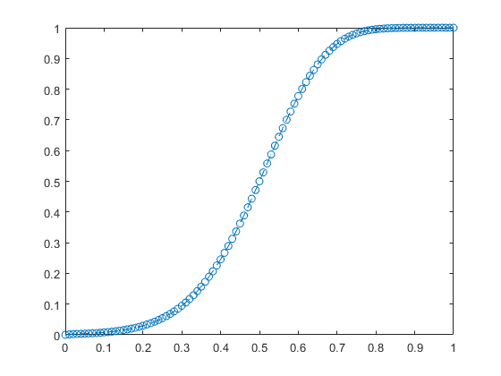

Contents
clear;close;clc;
The 2D Central Diff Scheme
youtube video for ref https://youtu.be/RK3_YXumMMQ?si=mgdX_AjKnQgZhq2W
N = 101; domain_lenght = 1; Lx = domain_lenght; Ly = domain_lenght; h = domain_lenght/(N-1); x = 0 : h : domain_lenght; y = 0 : h : domain_lenght;
initializing the problem
T_left = 1; T_right = 0; T_bottom = 0; T_top = 1; T(1,1:N) = T_left; %left side wall; T(1:N,1) = T_top; % Top wall; % Temp matrix T_new(1,1:N) = T_left; %left side wall; T_new(1:N,1) = T_top; % Top wall; T(:,N) = T_right; % Right side wall T(N,:) = T_bottom; % Bottom wall T_new(:,N) = T_right; % Right side wall T_new(N,:) = T_bottom; % Bottom wall rho = 1; u = 1; v = 1; gamma = 0.01; % Cell Peclet Number : Pe = rho * u * h /gamma;
The Sloving the discritization system of equations by Gauss seidel iteration
error = 1; toll = 1e-7; F_e = rho * u * h; F_w = rho * u * h; F_s = rho * v * h; F_n = rho * v * h; while error > toll for i = 2 : N - 1 for j = 2 : N - 1 a_E = gamma - F_e/2; a_W = gamma + F_w/2; a_N = gamma - F_n/2; a_S = gamma + F_s/2; a_P = a_E + a_W + a_N + a_S ; % fprintf('i,j are %f,%f \n',i,j); % disp(T); T_new(i,j) = (a_E*T(i+1,j) + a_W *T(i-1,j) + a_N * T(i,j-1) + a_S*T(i,j+1))/a_P; end end error = 0; for i = 2 : N-1 for j = 2: N-1 error = error + abs(T(i,j) - T_new(i,j)); end end T = T_new; end
ploting
x_dom = ((1:N)-1).*h; y_dom = 1- ((1:N)-1).*h; [X,Y] = meshgrid(x_dom,y_dom); contourf(X,Y,T,50);
central line temp
figure;
plot(1-y,T(:,(N+1)/2),'--o');
